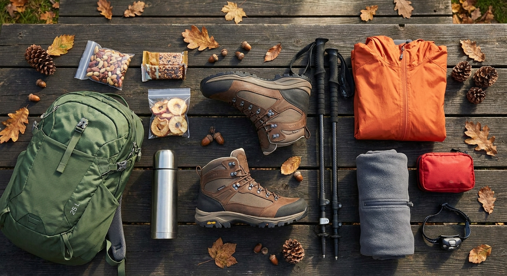
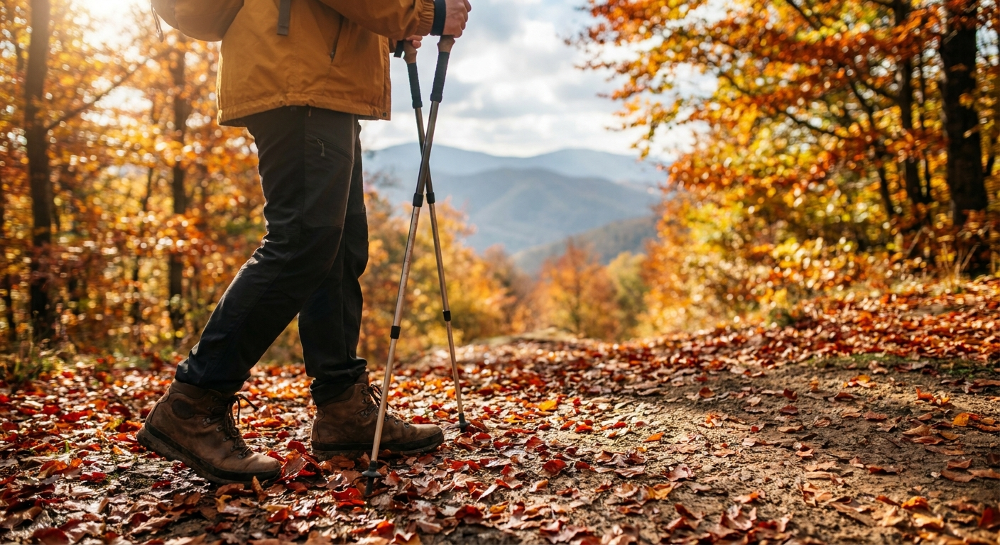

가을 등산 초보 필수 준비물 체크리스트 — 등산화·스틱 고르는 법과 저체온증 대비 행동식
단풍이 절정을 이루는 가을 산은 청명한 날씨로 산행하기 가장 좋지만, 평지와 산 정상의 극심한 기온 차(최대 10~15도 이상)와 급격한 일몰 시간으로 인해 안전사고 위험이 사계절 중 가장 높은 시기입니다.
등산 초보자일수록 낙엽 아래 숨은 젖은 돌을 밟아 미끄러지기 쉬우므로 접지력 좋은 미드컷 등산화와 관절 부담을 줄여주는 등산스틱은 부상 방지를 위한 필수 장비입니다.
산행 중 땀이 식으면서 발생하는 가을철 저체온증을 막기 위해서는 면 소재 옷을 피하고 '3단계 레이어링(흡습속건-보온-방풍)' 원칙을 지키며, 열량을 즉각 공급해 줄 고칼로리 행동식을 준비해야 합니다.

가을철 안전하고 쾌적한 단풍 산행을 위해 사전에 준비해야 할 필수 장비 일체 / AI 제작 이미지
01 | 가을 산행의 복병: 왜 가을에 저체온증과 낙상 사고가 많을까?
가을 산은 맑고 화창한 날씨에 방심하기 쉽지만, 기상 환경의 변화가 가장 극적인 계절입니다.
고도가 100m 높아질 때마다 기온은 약 0.65도씩 떨어지며, 산 능선에서 초속 1m의 바람이 불 때마다 체감온도는 1~1.5도씩 추가로 낮아집니다. 산 아래에서 18도였던 기온이 해발 800m 능선에서는 강풍과 함께 체감온도 3~5도 이하로 뚝 떨어지는 일이 다반사입니다.
오르막에서 땀에 흠뻑 젖은 상태로 능선에서 찬바람을 맞으면 땀이 마르며 몸의 열을 급속도로 빼앗아 가는데, 이것이 바로 가을철 산악 사망 사고의 주요 원인인 '저체온증(Hypothermia)'의 발병 메커니즘입니다.
02 | 클릭 설계 체크리스트: 가을 등산 필수 준비물 4대 영역
등산 가방을 꾸릴 때 빠뜨리기 쉬운 준비물들을 4가지 카테고리로 분류한 실전 체크리스트입니다. 출발 전 하나씩 점검해 보세요.
| 구분 |
필수 준비물 품목 |
선택 이유 및 기능 |
체크 |
| 착용 의류 (3레이어) |
흡습속건 기능성 티셔츠, 플리스 자켓, 경량 방풍·투습 윈드브레이커 |
면 소재 절대 금지, 땀 배출과 체온 유지 |
[ ] |
| 발·관절 보호 |
접지력 있는 등산화(릿지엣지/비브람), 두툼한 울양말, 등산스틱(2단/3단) |
낙엽 슬립 방지, 무릎 충격 30% 분산 |
[ ] |
| 행동식 및 수분 |
미온수·이온음료(1L 이상), 견과류, 초코바, 말린 과일, 온수 보온병 |
갈증 전 수분 보충, 혈당 저하 및 탈진 예방 |
[ ] |
| 비상 안전용품 |
헤드랜턴(보조배터리 포함), 보온 호일 담요, 미니 구급약품(대일밴드·소독약) |
일몰 후 조난 대비, 비상 체온 보존 |
[ ] |
03 | 등산화 고르는 법: 로우컷 vs 미드컷 vs 하이컷 비교
일반 운동화나 스니커즈를 신고 가을 산에 오르는 것은 얼음판 위를 걷는 것만큼 위험합니다. 젖은 낙엽과 화강암 바위가 많은 국내 산악 지형에는 전용 등산화가 필수입니다.
| 형태 구분 |
발목 높이 및 구조 |
적합한 산행 코스 |
장단점 비교 |
| 로우컷 (트레일러닝화) |
복사뼈 아래까지 오는 낮은 발목 |
남산, 인왕산 등 평탄한 둘레길, 2시간 이내 완경사 코스 |
가볍고 활동성이 좋으나 발목 지지력이 없어 접질림 위험 |
| 미드컷 (중등산화 초입) |
복사뼈를 안정적으로 감싸는 높이 |
북한산, 관악산, 계룡산 등 당일치기 3~5시간 코스 (초보자 최적 추천) |
발목 꺾임 방지와 보행 편의성의 가장 이상적인 균형 |
| 하이컷 (정통 중등산화) |
복사뼈 위까지 굳건하게 조여주는 높이 |
지리산, 설악산 종주, 1박 이상 장거리 백패킹 |
무거운 배낭 하중 지지에 탁월하나 신발 자체가 무겁고 뻣뻣함 |
💡 등산화 구매 실전 꿀팁
- 치수 선택: 두툼한 등산용 양말을 신고 하산 시 발가락이 신발 앞코에 닿아 멍드는 것을 막기 위해 평소 운동화보다 5~10mm 크게 선택해야 합니다.
- 창 재질 확인: 우리나라 바위산에는 화강암 접지력이 우수한 '부틸고무(예: 캠프라인 릿지엣지 등)' 밑창이 젖은 바위에서 미끄러지지 않아 초보자에게 특히 유리합니다.

미끄러운 낙엽길에서 균형을 잡고 무릎 하중을 분산해 주는 올바른 등산스틱 사용법 / AI 제작 이미지
04 | 등산스틱 선택과 올바른 보행 길이 조절법
"젊은 사람인데 등산스틱까지 써야 하나"라고 생각하는 것은 큰 오산입니다. 스틱은 단순히 힘이 부칠 때 짚는 지팡이가 아니라 체중을 네 다리로 분산하는 안전장치입니다.
등산스틱을 올바르게 사용하면 하산 시 무릎 관절에 가해지는 하중을 약 25~30% 줄여주고, 젖은 낙엽을 밟았을 때 순간적으로 중심을 잃고 넘어지는 것을 막아줍니다.
📏 등산스틱 길이 조절 및 보행 공식
1. 평지 보행: 스틱을 수직으로 짚었을 때 팔꿈치 각도가 정확히 90도 직각이 되도록 길이를 맞춥니다.
2. 오르막길: 상체가 앞으로 숙여지므로 평지 기준보다 5~10cm 짧게 조절하여 뒤로 밀어내듯 짚습니다.
3. 내리막길: 발이 아래로 내려가면서 몸이 뒤로 쏠리므로 평지 기준보다 5~10cm 길게 늘려 몸보다 앞쪽 지면을 지지합니다.
4. 손목 스트랩 쥐는 법: 스트랩 고리 아래에서 위로 손을 넣은 뒤, 손잡이와 끈을 함께 감싸 쥐어야 손목에 힘을 주지 않고도 끈의 탄성으로 편안하게 걸을 수 있습니다.
05 | 가을 산행 의류의 핵심: 3레이어링 시스템
가을 산행 의류의 기본은 '두꺼운 옷 한 벌'이 아니라 '얇은 기능성 옷 여러 겹 겹쳐 입기'입니다. 산을 오르며 체온이 올라갈 때는 한 겹 벗고, 쉴 때는 즉시 덧입는 것이 체온 조절의 핵심입니다.
| 레이어 단계 |
착용 품목 및 소재 |
주요 기능 및 역할 |
| 1단계: 베이스 레이어 (속옷) |
쿨맥스, 메리노 울 등 기능성 티셔츠 |
몸에서 나는 땀을 즉시 흡수하여 공기 중으로 배출, 건조 유지 |
| 2단계: 미드 레이어 (보온층) |
경량 그리드 플리스, 얇은 인슐레이션 자켓 |
공기층을 형성하여 신체 고유의 따뜻한 온기 보존 |
| 3단계: 아우터 쉘 (보호층) |
고어텍스, 퍼텍스 등 방풍·투습 자켓 |
외부의 차가운 칼바람, 안개, 비를 차단하면서 내부 습기 배출 |
06 | 지치기 전에 먹는 행동식과 수분 보충 요령
등산 중에는 시간당 400~600kcal 이상의 에너지가 소모됩니다. 배가 고프다고 느껴지는 순간은 이미 체내 글리코겐이 고갈된 '봉크(Bonk, 탈진)' 상태일 가능성이 높습니다.
행동식은 소화가 빠르고 부피 대비 열량이 높은 당류와 복합 탄수화물 위주로 구성해야 합니다. 견과류, 에너지바, 양갱, 건포도 등을 작은 지퍼백에 소분하여 배낭을 벗지 않고도 꺼내 먹을 수 있는 주머니에 넣어둡니다.
물은 한 번에 벌컥벌컥 마시면 위의 부담이 커지므로 15~20분마다 입안을 적시듯 두세 모금씩 나누어 마시는 것이 좋습니다. 쌀쌀한 날씨에는 체온을 유지해 줄 따뜻한 꿀물이나 보리차를 보온병에 담아가시면 산 정상에서 큰 도움이 됩니다.
07 | 가을철 해 질 녘 조난 방지와 헤드랜턴의 중요성
가을철 산림 내에서는 오후 5시만 넘어도 나무 그늘로 인해 급격히 어두워집니다. 도심보다 일몰 체감 시점이 30분 이상 빠릅니다.
등산 초보자들의 흔한 실수는 스마트폰 플래시만 믿고 랜턴 없이 산에 오르는 것입니다. 스마트폰 플래시는 배터리 소모가 극심하고 추위에 방전되기 쉬우며, 양손을 자유롭게 쓸 수 없어 넘어졌을 때 크게 다칠 수 있습니다.
배낭 안에는 항상 작고 가벼운 헤드랜턴과 여분의 충전 케이블을 상시 휴대해야 합니다. 국립공원 기준 일몰 전 하산을 위해 오후 4시 이전에는 반드시 하산을 시작해야 합니다.
08 | 배낭 꾸리기 요령: 무게 중심과 패킹 공식
초보자 당일 산행용 배낭으로는 20리터에서 30리터 사이의 용량이 가장 적당합니다. 배낭에 짐을 어떻게 배치하느냐에 따라 어깨와 허리가 느끼는 피로도가 완전히 달라집니다.
가장 가벼운 침낭이나 여벌 옷은 배낭 맨 아래에 넣고, 물병이나 보온병 같은 무거운 짐은 등판 쪽 위쪽(등과 어깨 사이)에 밀착시켜야 몸의 무게 중심이 흔들리지 않습니다.
자주 꺼내 쓰는 윈드브레이커, 행동식, 비상약품 등은 배낭 헤드 포켓이나 바깥 주머니에 수납하여 산행 중 신속히 대처할 수 있도록 합니다.
09 | 등산 초보자가 가장 자주 묻는 질문 FAQ
Q1. 등산할 때 청바지나 레깅스를 입어도 되나요?
A1. 청바지는 절대 금지입니다! 땀에 젖으면 무거워지고 신축성이 없어 무릎 관절을 압박하며 젖었을 때 체온을 급속도로 떨어뜨립니다. 스포츠 레깅스는 신축성이 좋으나 나뭇가지나 바위에 긁혀 찢어지기 쉬우므로, 내구성이 있는 등산 전용 바지를 권장합니다.
Q2. 산에서 길을 잃었을 때 어떻게 해야 하나요?
A2. 당황하여 무작정 골짜기로 내려가면 절벽이나 폭포를 만나 더 위험해집니다. 지나온 능선이나 정규 탐방로로 즉시 되돌아가고, 국립공원 탐방로에 설치된 '다목적 위치표지판' 번호를 확인하여 119나 국립공원 사무소에 구조를 요청하세요.
Q3. 무릎 통증을 줄이는 하산 걸음걸이는 무엇인가요?
A3. 하산 시 발뒤꿈치부터 쿵쿵 디디면 충격이 무릎으로 직격합니다. 무릎을 살짝 구부려 스프링처럼 충격을 흡수하고, 보폭을 좁혀 발바닥 전체로 지면을 부드럽게 딛는 '보폭 줄이기' 주행법을 익히셔야 합니다.
#가을등산준비물
#등산초보체크리스트
#등산화고르는법
#등산스틱사용법
#가을저체온증예방
#등산레이어링시스템
#단풍산행준비
#등산행동식추천
#안전산행가이드
#산악안전수칙